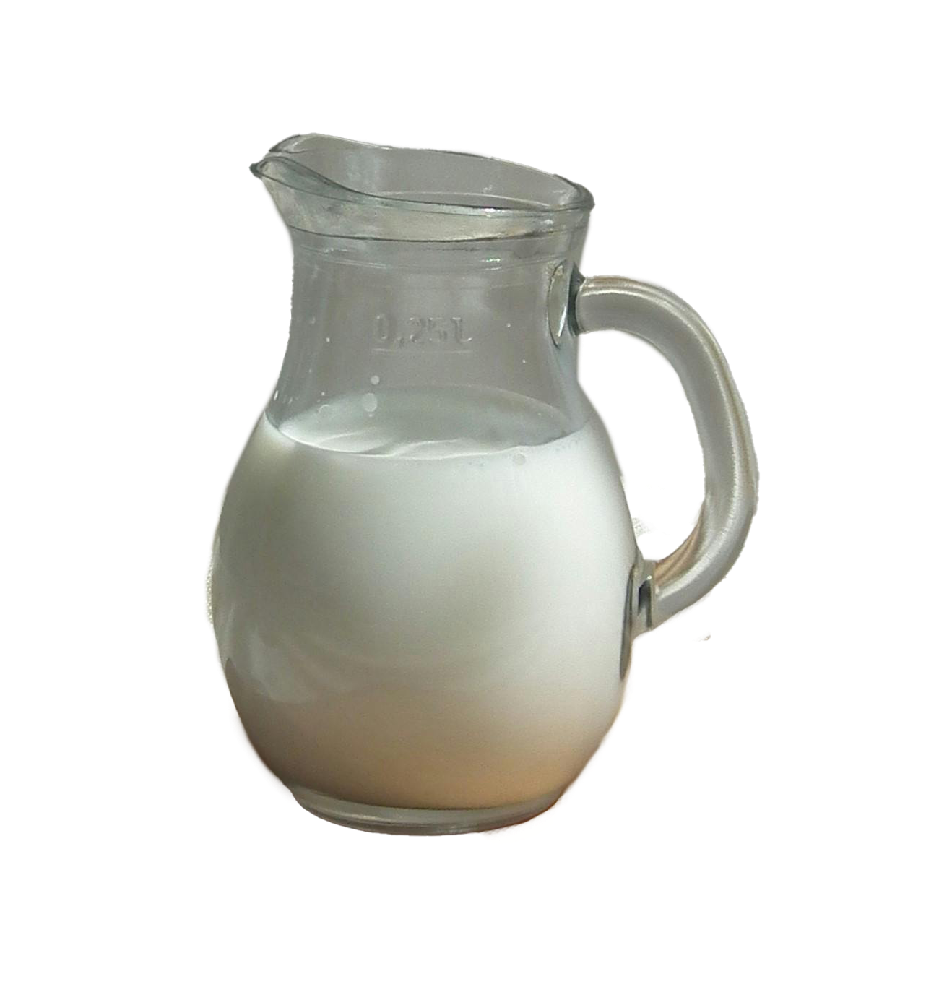
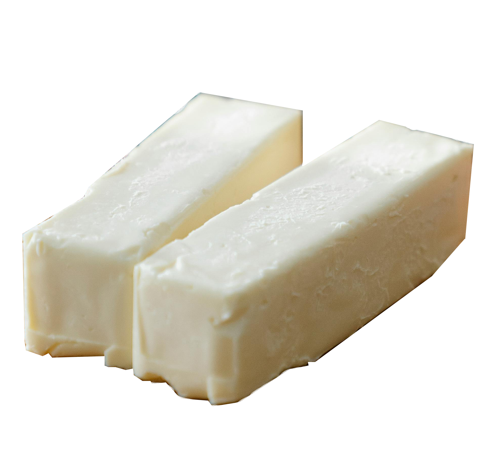
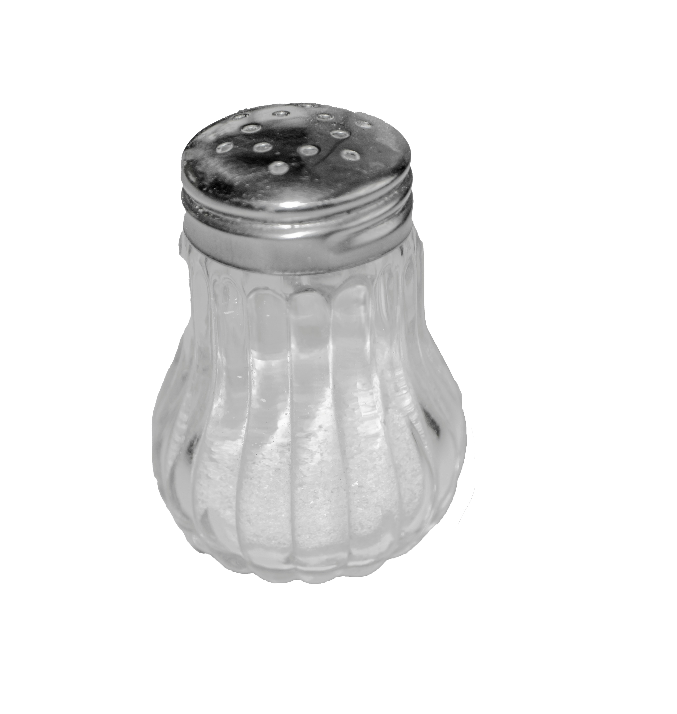

TASTY WAFFLES
Hora de aprender la magia de los maravillosos waffles!

Historia
Las palabras «waffle» y «wafers» (oblea), derivan de la misma palabra del alemán antiguo Wafel, que también se relaciona con palabras que significan «tejido» y «panal de abeja», lo que podría ser el precursor de la cuadricula en el waffle actual.
La iglesia utilizaba las obleas como hostias. En la Edad Media, los monasterios eran los encargados de hornear las obleas, que después eran consagradas para convertirse en hostias. Las obleas eran uno de los pocos alimentos que las personas podían comer durante los períodos de ayuno religioso. Con el tiempo, las panaderías seculares empezaron a producir obleas más grandes y más elegantes, con diseños elaborados y patrones en la parte superior.
Este tipo de obleas todavía están asociadas con celebraciones en Europa, como la celebración de Reyes.
En la época medieval, el wafel alemán, se convirtió en el gaufre francés, que con el tiempo se convirtió en las gaufrette, las galletas de oblea rellenas de algún tipo de crema, casi siempre chocolate. En México se conocen como galletas napolitanas. Los conos para los helados, también son un derivado de este tipo de obleas.
Receta de Waffles Dulces
Ingredientes



- Eren Jeager
- (Descripcion de Eren)
- Mikasa Ackerman
- (Descripcion de Mikasa)